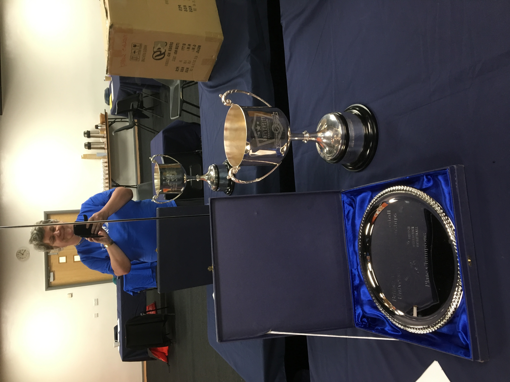
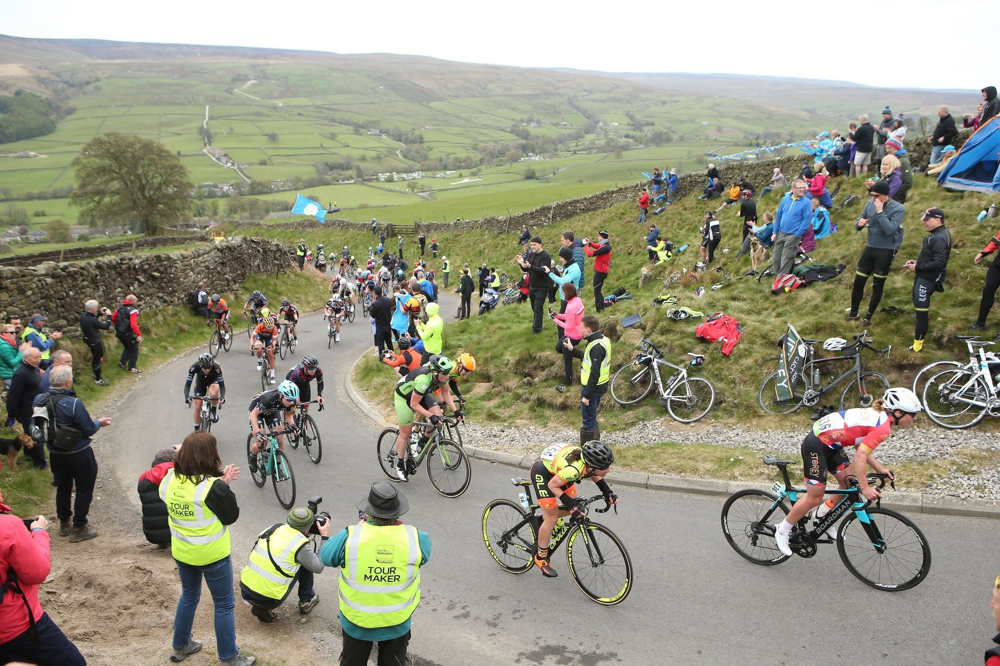
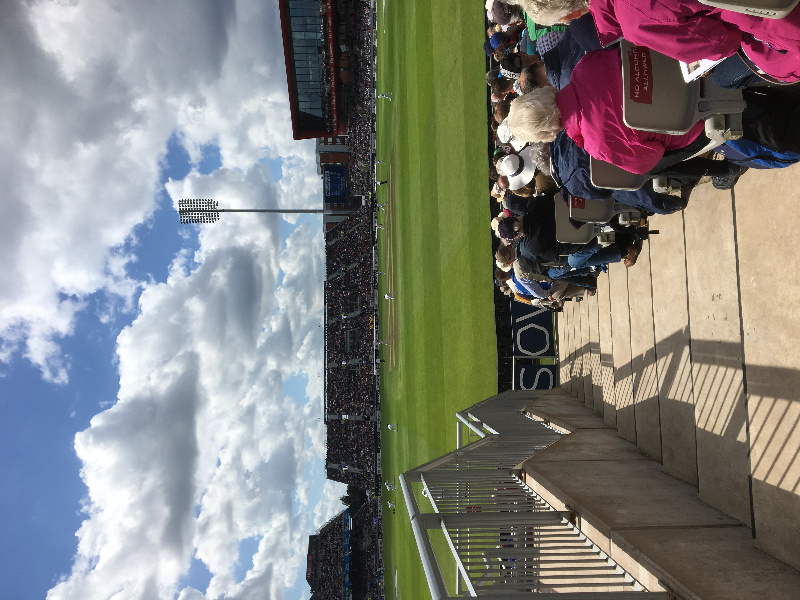
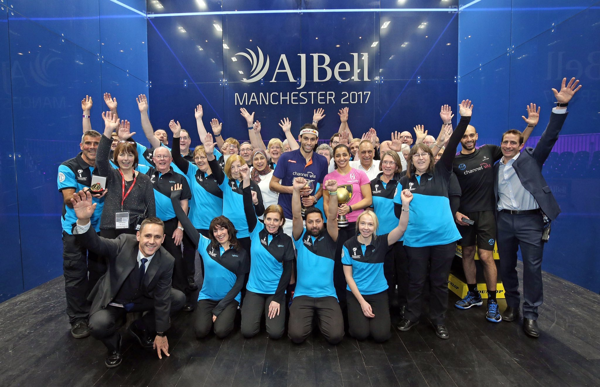

2017
January /February 2017
The work outside the patio and back door at Mum's was finally completed. No more waking up and finding the floor an inch deep in water after rain at night. Mum said she could cope putting towels down and washing them each day, but it was definitely too much for her. The builders, once they arrived, did a great job, and as a plus for Mum, very chatty. A pair of brothers apparently.The Swanettes were on duty on a freezing night at the A J Bell. We took some time off to have our group photo taken with the Premiership Rugby trophy .
 February also saw the National Squash Championships back at the National Squash Centre. As ever, much glass cleaning, floor mopping and door security. Missed the final day as I was in bed with a shockig cold, but they sent me the group picture they had taken with Laura Massaro and Nick Matthew.
{kind=link}
March 2017
Next were the British Wheelchair Basketball University Championships. The day before the weekend, I got an e-mail telling me to show up at 9.30am at the Belle View Sports Village, a new venue for me. Due to low volunteer numbers, we were going to be assigned our roles on arrival. I arrived and reported to the reception desk. After a two minute briefing, and before getting a cuppa or uniform, I was in charge of the team check-in desk. I had to hand out the numbered bibs and record which team members was using which, and which was the impaired team member. The rules are different from Paralympic basketball, to allow for more participation. Only one of the 5 team mebers need to be impaired. The others in the team can be able bodied. We were providing loan wheelchairs for the competition.Once all the teams had checked in, two hours after arrival, I got a break to have a cuppa and put on my t-shirt before competition started . It turned out when they said volunteer numbers were low, they meant for Saturday, I was the volunteer. I was tasked with collecting up the loan wheelchairs post match to ensure they were available for all teams, and collecting the final scorecard from the referees and taking them to the organisers in the back who could update the official results on the computer.
On Sunday, two more volunteer arrived, one of whom was Gillian from MCRVIP so things weren't quite so hectic. The guys from Anglia Ruskin University in Cambridge, were obviously treating the weekend as a weekend away rather than a serious competition. Their impaired team member was an extremely good wheelchair basketballer, but the rest of them were not exactly athletic. Thye had a large shared bucket of KFC for their lunch. I think they thought sitting in a wheelchair would not require much puff or fitness. By the end of the day, we had to push them out to their van in the chairs and tip them into the van.
April 2017
 The Tour de Yorkshire was back and I was working on all three stages. I was travelling each day rather than stopping because I was in three quite different spots. Day 1 and I was at Garrowby Hill, which is on the A166 between York and Bridlington. Had a Little Chef Olympic breakfast enroute for the first time in years. We Tourmakers had to meet up at a farm towards the top of the hill who offered us parking. The treat of the day was the Pakistan Consulate Bhangra Van in the publicity caravan, which only just made it up the hill, belching smoke and trailing the smell of burning rubber.{kind=link}
Day Two and a very picturesque drive to my spot on the Cote de Lofthouse, as Trapping Hill is known these days in cycling circles. It is in the Nidderdale area of the Yorkshire Dales National Park, just north of Pately Bridge. We met up at the Crown pub in Lofthouse, but told we could park for free at a farmer's field half way up the climb. I positioned myself on a bend where the incline sharpened considerably. The Women's race came through first. A professional photographer picked the same spot, but a little higher up, and caught me in one of his photos posted to the TDY Twitter feed. Anybody who cycled up got a great reception.
The publicity caravan preceeded the men's race, but the Bhangra Van didn't attempt the hill, which was a relief for those of us who had seen it struggle the day before. Auntie Bessie's Yorkshire Pudding did make it. Day 3 saw me in Burley-in-Wharfedale . You basically drive past Accent in Skipton, and keep going for a bit until you get to Burley. We met up at the Red Lion Pub who were allowing us to park for free. We had to be there early as we were early on in the route for the day, and the publicity caravan, peleton and team cars flew through at a rate of knots. Having had lunch at the Red Lion, I headed home, and managed to watch the stage finish on the TV.
June/July 2017
 June, and we were in Didsbury for the pre Wimbledon grass court tennis tournament, with local girl Naomi Broady as the poster girl for the tournament, which was now an International Tennis Federation (ITF) Tennis Circuit tournament, known as the Aegon Manchester Trophy . Broady, the 6th seed, made it to the semi-finals, beating the No.1 seed in the quarter finals. She lost to the eventual winner, Zarina Diyas from Kazakhstan.{kind=link}
July saw the start of the T20 Blast matches at Old Trafford. Sunday 16th saw Derbyshire bat first and make 152 for 8 off their 20 overs. In reply, Lancashire made 155 for 5 in just under 19 overs. The following Sunday, Durham were the visitors. Lancashire made 174 for 5, and restricted Durham to 143 for 8.
August 2017
Old Trafford staged the 4th Test Match between England and South Africa. As ever with a Test Match there was a different entertainment group each day. The cricketers on stilts are regular visitors, but this time we has W G Grace. The mariachi band proved very popular, but they seemed to only have three sogs in their repertoire, including "Ystalyfera". The new Hilton Garden Hotel at the ground had been running a competition. The prize each day was a free lunch served on double beds, in the space where extra seats alongside Stand A would normally be. Sounds good, but eating in full view of the crowd was somewhat intimidating, and eating on a bed is not the easiest thing to do. At the weekend, the fancy dress competition takes places, and the winners were the fifteen guys who came as post boxes. The stilted drummers were a very popular option. I did manage to sit in the back of C stand to catch some of the action. The T20 game against the Worcs Rapids was a late night game and the flame throwers were incredibly hot to be close to. Two days later Lancashire lost to the Birmingham Bears and the Queen's Baton from the Gold Coast was visiting Old Trafford.September 2017
England played an ODI against the West Indies, so we were on duty in September when it was a little chilly for cricket. There was a fabulous band that moved around the concourse throughout the evening. They even played the BBC Cricket theme as the fan left at the end of the game.Feeling a little jaded with the pain that was dealing with the adult idiots in Mersey Weaver Scouts, Owen invited me along to the selection event for the World Scout Jamboree(WSJ) contingent. I was a non-voting helping hand. It was fascinating to watch the young people undertake the tasks their groups had been assigned. They had been told it was more important to do the task in the right way, than to succeed, teamwork and communication being the most important elements. They also had to undertake an interview with a three person panel. All the voting adults then congregated, and the 10 successful young people selected, along with three ranked alternatives. Five of the young people stood out and were selected with little discussion. There were none that were definitely ruled out, but a few that doubts were expressed about. A set of twins had applied, both of whom were strongly favoured to be selected pre event, but in the end, only one was picked. He was the quieter, less cocky individual.

{kind=link}